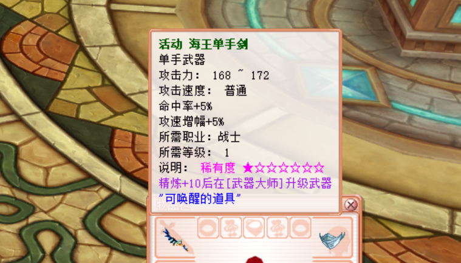
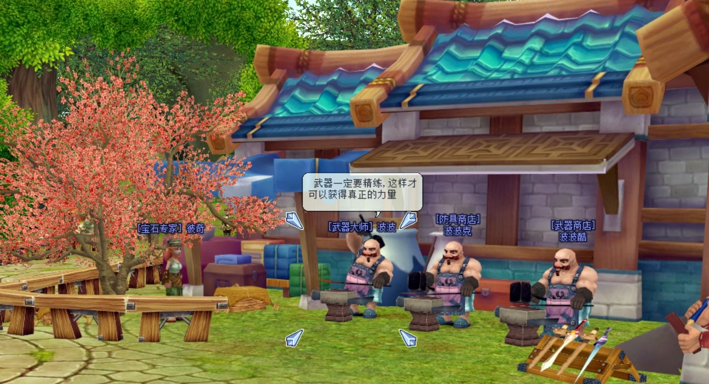
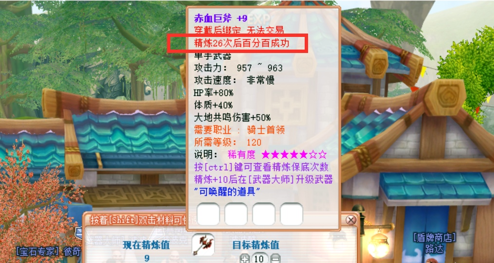
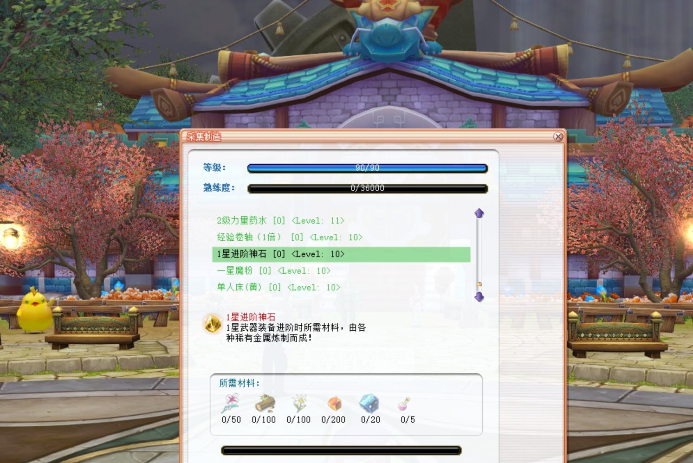

装备进阶
一步一步打造出属于你的最强神器.
装备星级
每个新建角色初始全都自带了一身一星武器及装备
部分职业，比如刀锋自带的是两把单手剑，但在背包中还有一个单手斧的武器盒子，打开后可以获得两把一星单手斧，至于使用什么武器，完全由您自行选择！
将鼠标放在装备上即可查看稀有度，1-7星的标记！
这些初始的一星装备武器将会跟随您一直进阶为最顶级的7星神器！


如何进阶?
在帕里镇上有个NPC叫武器大师 波波，他可以为您的所有装备进行加工，包括精炼及进阶
首先将武器或装备精炼至+10，然后准备好进阶材料即可升级武器装备！
进阶后的装备精炼等级将会从+10降至+5，但同时会继承武器上的唤醒，卡片，宝石等所有额外属性.
精炼保底次数
装备武器的精炼需要消耗大量的材料，为了照顾非酋体质的玩家，我们为高级装备添加了精炼保底次数！
紫名的装备武器，按Ctrl键可以查看当前保底次数，如图中显示26次！
意为精炼26次后如果还未成功，那么第27次系统将强制为您提升一级！
绿名的武器装备强化概率本身就很高完全不需要使用保底机制！
注意：只有在NPC进行安全精炼才能使用保底次数！


材料获取
-兽魂：击败相应的怪物或BOSS概率获得
-太阳石：野外所有怪物均有大量掉落
-百炼精铁：使用不同的矿石制作而成
-进阶神石：使用不同的稀有矿石及材料制作而成
-闪耀的宝石：可以使用所有采集的矿石制作而成
-初级防爆精炼卷：金币商店购买，售价65W金币
-高级防爆精炼卷：日常活动或商城中购买，售价8点券
-装备精炼辅助剂：日常活动或商城中购买，售价4点券